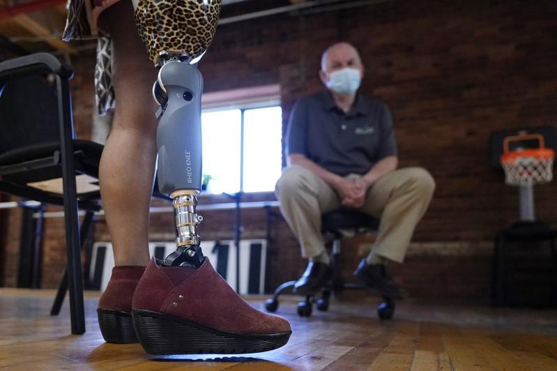
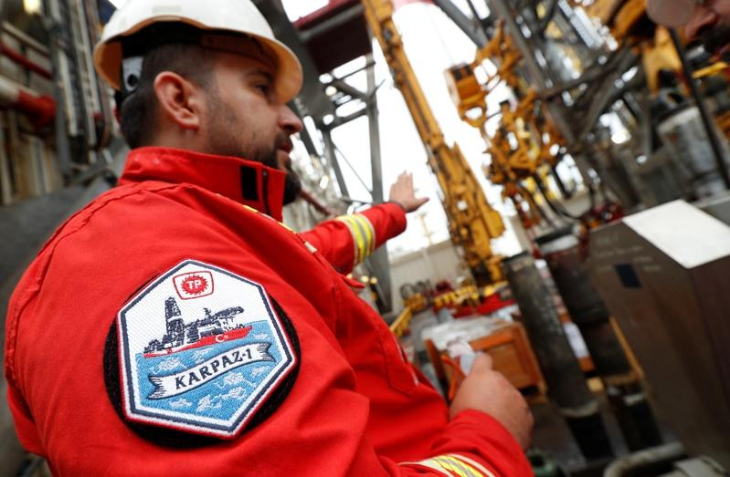
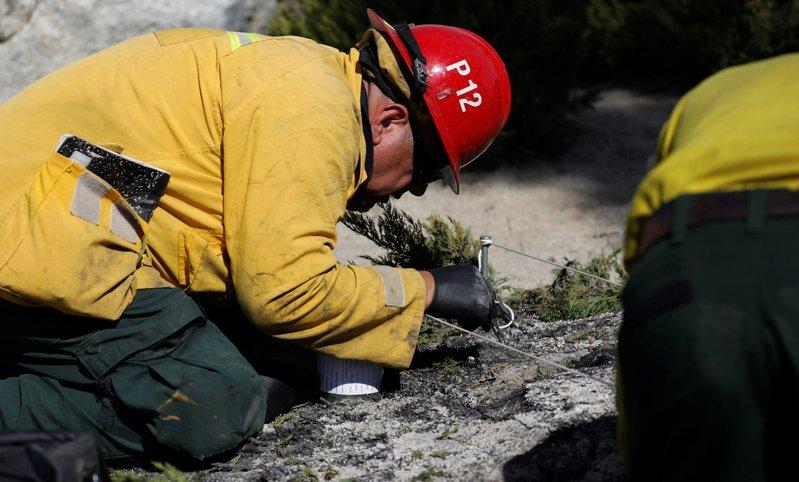
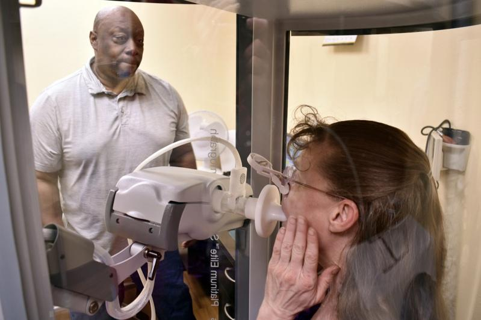
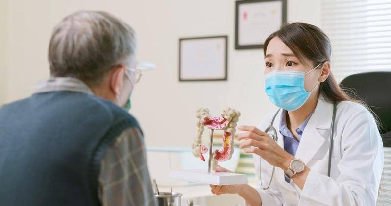

读排行靠前的知名大学、毕业后进入备受社会赞扬的职业领域工作确实让人称羡，但未必每个人都有条件、或者适合踏上这样的标准大道；事实上，人各有志而且行行出状元，招聘消息搜索引擎(Indeed)最近贴文列出全美32个待遇不错的小众职业，多数年薪介于5万到10万元，有些甚至逼近26万元。
Indeed列出的32项小众工作中，14项有独特的职责、学位或特殊知识要求、工作条件相对危险，薪水很高。
肠造口治疗师
平均年薪6万1727元
肠造口治疗师(Enterostomal therapist)是帮助治疗造口患者的护理人员，负责肠造口、复杂伤口或失禁患者护理；其共同职责包括对造口患者进行术后护理技术教育、手术前确认造口位置、解决造口问题或者回答患者家人所提任何问题。
医学超音波医师
平均年薪7万5682元
医学超音波医师(Diagnostic medical sonographer)借助超音波等设备为体内各部位拍摄影像，帮助医疗专业人员对患者做出准确诊断。这些检查人员在患者接受摄影检查前预作准备，教育患者相关知识，协助患者定位以获最佳效果；此外还审查患者病史、向护理团队分发医学影像、在诊所内对患者的护理进行协调。
侍酒师
平均年薪6万8275元
侍酒师(Sommelier)是葡萄酒专家，根据喜好、膳食和其他影响因素提供饮品建议，通常与厨师和酿酒师合作，创造独特且令人愉悦的葡萄酒搭配。其他职责包括妥善管理葡萄酒库存、对相关人员进行选酒培训、与供应商商议葡萄酒订价、协调品酒活动。
分娩教育专家
平均年薪5万2209元
分娩教育专家(Childbirth educator)协助准爸爸妈妈了解分娩过程、制定全面分娩计划；这些专家必须对新的分娩技术进行研究，有些人开设正式课程或主持小组会议，直接帮助新手父母了解分娩程序，有些则向其他分娩专家提供建议。

装具师和义肢师
平均年薪7万9579元
装具师(Orthotist)和义肢师(Prosthetist)负责为患者制造义肢或支撑设备。其职责是检查患者病历、进行评估并提出问题，旨在制作舒适有效的肢体或设备，设备完成后会有后续服务，确保患者适应。

石油工程师
平均年薪9万6592元
石油工程师(Petroleum engineer)负责设计安全有效方法，以便从地下提取石油和天然气；其职责是分析地面调查、历史模式和电脑辅助模型，以确定理想的采集点，并与科学家和地质学家合作，创造有效钻井方法、保持安全。

火灾调查员
平均年薪7万8254元
火灾调查员(Fire investigator)对火灾现场分析燃烧模式和其他因素，协助确定事故原因，并收集证据、进行访谈并与其他安全官员合作，协助确定罪犯；此外，撰写火灾现场详细报告并提供法庭证词以确保公共安全。
遗传咨询师
平均年薪5万2203元
遗传咨询师(Genetic counselor)协助了解潜在遗传性疾病，有助于家庭做出生殖或医疗保健等相关决定；工作内容包括采访患者以了解其健康状况和家族病史，并进行基因检测以评估患者 DNA，借以识别潜在遗传性疾病或天生缺陷；此外，为患者提供遗传性疾病的教育。

呼吸治疗师
平均年薪5万8697元
呼吸治疗师(Respiratory therapist)帮助有肺部疾病的患者，其职责是评估新患者、回顾病史并分析呼吸治疗研究，借以制订治疗计划。工作内容包括管理吸入剂、以图表和数字记录患者护理情况、完成出院文书工作，许多治疗师也教育患者在家中或自行治疗和使用呼吸设备。
电梯检验员
平均年薪5万4739元
电梯检验员(Elevator inspector)检查设施内的电梯和自动扶梯，以确保安全运作；此外，检查新电梯和自动扶梯安装，进行安全及建筑标准验证。检查员并且向设施经理、承包商和其他个人提供有关电梯和自动扶梯的建筑规范和安全要求教育。
临床伦理学家
平均年薪9万1510元
医学伦理学主要是让人们可接受有品质、符合相关原则的医疗照顾；临床伦理学家(Clinical ethicist)就是确保落实这样概念，主要职责是分析机构目前的道德准则、提供改善道德合规性和患者护理的建议，工作内容包括审查医疗机构运作、为护理人员提供道德指导、采访患者及其家人、制订改进计划、与机构道德团队合作。
道德黑客
平均年薪9万3298元
道德黑客(Ethical hacker)是专门对付黑客的计算机科学专业人员，试着使用不同的黑客入侵法访问系统或网络以评估系统或网络安全性；评估后提出报告，并提供强化网络或系统安全的建议。这些专业人员要不断研究最新的电脑科技和黑客技术。
马术治疗师
平均年薪9万9250元
「马术治疗」是借助马匹进行治疗，其原理在于，利用马的规律运动模式以及人马交互，对各种功能障碍、行为障碍进行治疗；马术治疗师(Hippotherapist)负责运行这些治疗，主要工作包括分析、诊断和以马匹为工具治疗各种疾病，往往使用数字射线照相、冲击波治疗、数字超音波和内视镜协助诊断患者健康状况。

胃肠病学家
平均年薪25万8689元
胃肠病学家(Gastroenterologist)负责诊断和治疗胃肠道和肝脏疾病，主要职责是进行患者咨询、回顾病史并完成体检，以深入了解患者医疗状况，还借由收集体液或使用诊断设备进行专业测试、深入了解病情，最终制定治疗计划并在必要时转诊以确保患者得到完善治疗。
另有18项鲜为人知的工作也有不错待遇：驯马师(年薪3万9528元)、眼科医疗技术员(年薪4万6399元)、宾果游戏经理(年薪4万7937元)、环境科学与保护技术员(年薪5万1630元)、高尔夫球跳水运动员(年薪5万3934元)、犯罪现场清洁工(年薪5万5974元)、螃蟹渔民(年薪5万8067元)、提供临终培训的丧亲协调员(年薪5万8170元)、负责企业内部规章制度制定与运行监督的企业合规师(年薪5万9599元)、风能技术员(年薪6万1818元)、放射技术专家(年薪6万2917元)、处理数据并制图的土壤保护专家(年薪6万4010元)、火车工程师(年薪6万4210元)、兽医针灸师(年薪6万9037元)、街道杆和定制制造工(年薪6万9377元)。
这些小众工作所需要的教育文凭不一，多半至少要高中毕业；如果是与医疗相关的工作，多半需要大学文凭。